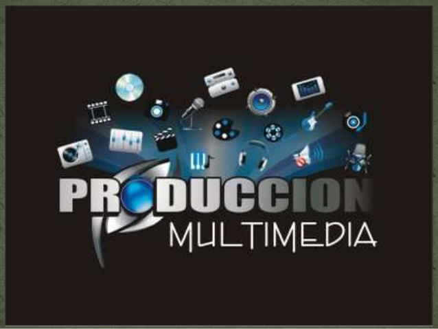

|  |
Mediante este programa de formación usted podrá adquirir conocimientos y habilidades para desempeñarse competentemente en:
 |
|
Carrera Tecnológica Dirigida y enfocada a capacitar personal técnico con habilidades para producción de comunicación gráfica y animación digital de imágenes. |
|
|
Inscripciones:
desde: 2 de Octubre 2020 hasta: 8 de Octubre 2020 Charla Informativa: Lugar: (virtual) https://n9.cl/jxlb Fecha y hora: 6 de octubre 02:00 PM pruebas de selección: 9 al 14 de octubre . (Esta fecha se informa al confirmar su inscripción) Periodo académico: duración: 24 meses fecha incio: 3-Noviembre-2020 fecha final: 2-Noviembre -2022 horario: 8:00 am a 06:00 pm (fines de semana) Título a obtener: Tecnólogo en Producción de multimedia |
|
| Realiza tu inscripción antes del: 08/octubre/2020 | |
| Regresar a la tabla de cursos .... | |